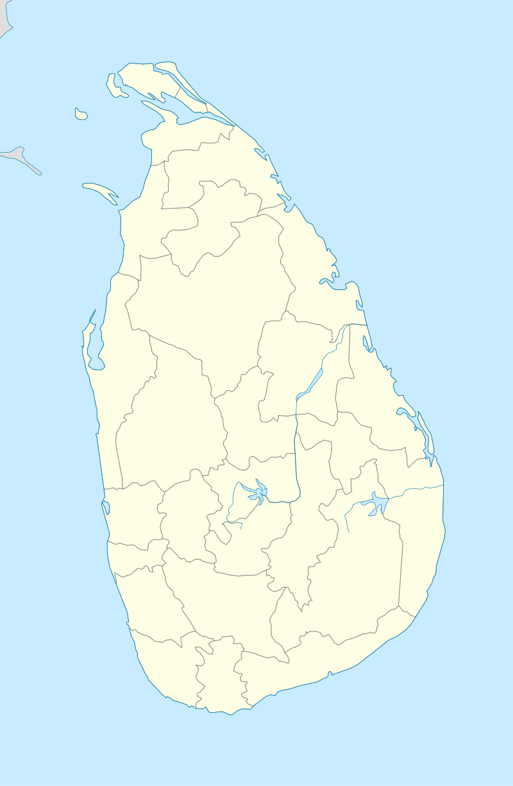
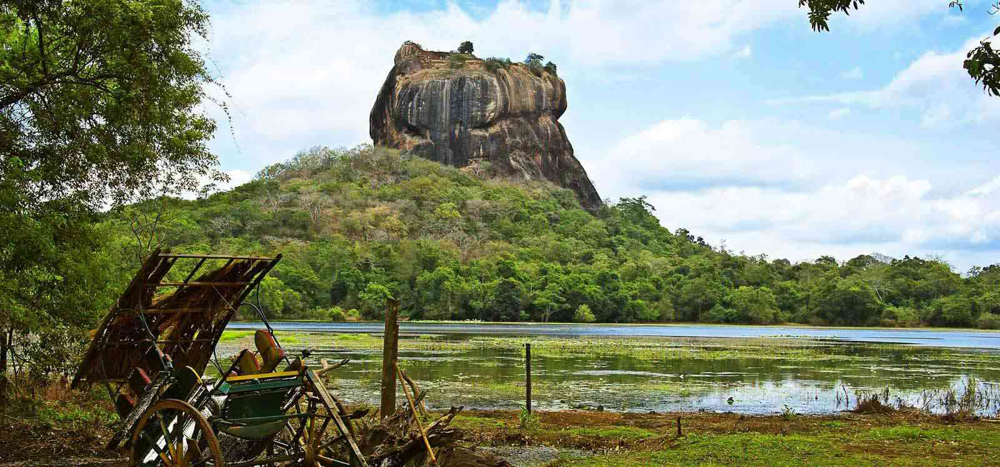
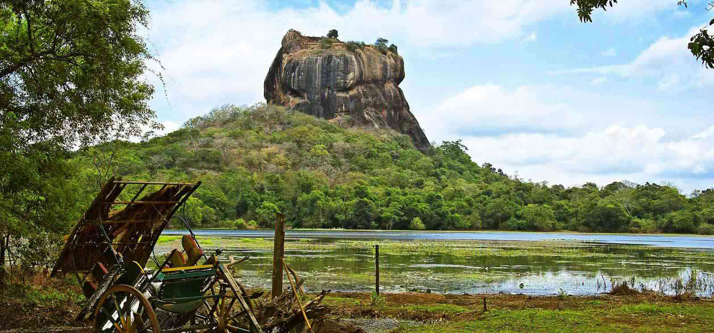

SIGIRIYA
The name refer to site of historical and archaeological significance that is dominated by a
massive column of rock nearly 200 meters high.According to the ancient Sri lankan chronicle the
Culavamsa this site was selected by kig
Kasyapafor his new capital.
He built his palace on the top of this rock and decorated its sides with colourful frescoes.
On a small plaeu about halfway up the side of this rock he buit a gateway in the form of an
enormous lion.The name of this place is derived from this stricture sinhagiri the
lion rockThe capital and the royal palace was abandoned after the king's death.
it was used as a Buddhist manastery untill the 14th century.
Archaeological remains and features
The Lion Gate and Climbing Stretch
In 1831 Major Jonathan Forbes of the 78th Highlanders of the British army, while returning on horseback from a trip to Pollonnuruwa, encountered the "bush covered summit of Sigiriya".[6] Sigiriya came to the attention of antiquarians and, later, archaeologists. Archaeological work at Sigiriya began on a small scale in the 1890s. H.C.P. Bell was the first archaeologist to conduct extensive research on Sigiriya. The Cultural Triangle Project, launched by the Government of Sri Lanka, focused its attention on Sigiriya in 1982. Archaeological work began on the entire city for the first time under this project. There was a sculpted lion's head above the legs and paws flanking the entrance, but the head collapsed years ago.
Sigiriya consists of an ancient citadel built by King Kashyapa during the 5th century. The Sigiriya site contains the ruins of an upper palace located on the flat top of the rock, a mid-level terrace that includes the Lion Gate and the mirror wall with its frescoes, the lower palaces located behind the lavish lower gardens, and moats and ramparts which protected the citadel. The site was both a palace and a fortress. The upper palace on the top of the rock includes cisterns cut into the rock.
Close up of the Lion's Paw
Site plan
Sigiriya is considered to be one of the most important urban planning sites of the first millennium, and the site plan is considered very elaborate and imaginative. The plan combined concepts of symmetry and asymmetry to intentionally interlock the man-made geometrical and natural forms of the surroundings. On the west side of the rock lies a park for the royals, laid out on a symmetrical plan; the park contains water-retaining structures, including sophisticated surface/subsurface hydraulic systems, some of which are working today. The south contains a man-made reservoir; these were extensively used from the previous capital of the dry zone of Sri Lanka. Five gates were placed at entrances. The more elaborate western gate is thought to have been reserved for the royals.[7][8]
Frescoes
  
